濮阳简介
文化历史
景点介绍
景点名胜
绿色庄园
濮上园
濮阳美食
风景名胜
登录注册
清丰县冀鲁豫军区纪念馆
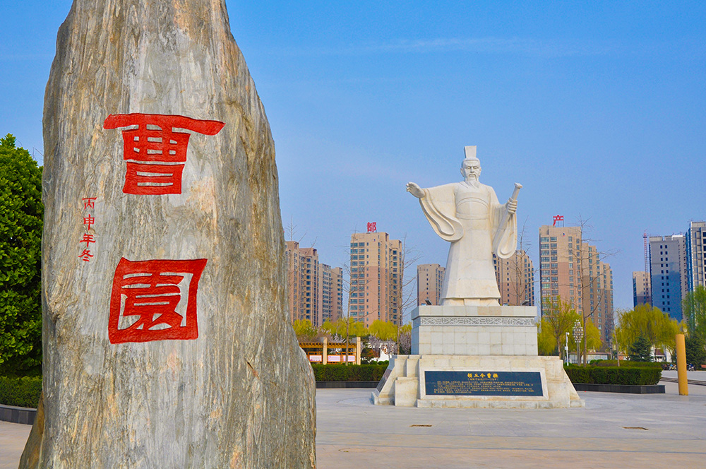
清丰县曹园
东北庄野生动物园
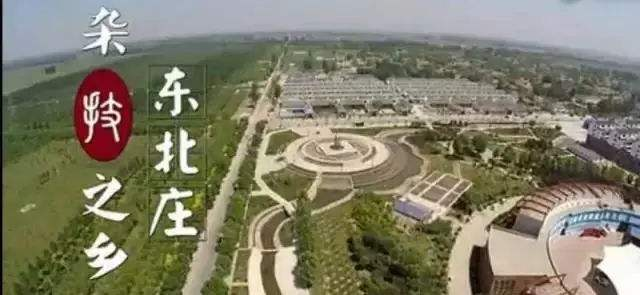
东北庄杂技之乡
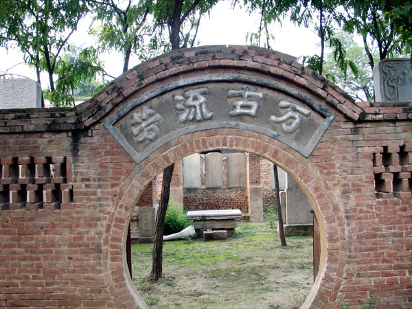
台前县明代魏氏碑林
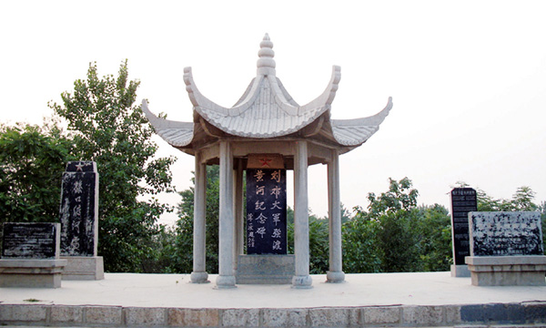
台前县刘邓大军强渡黄河纪
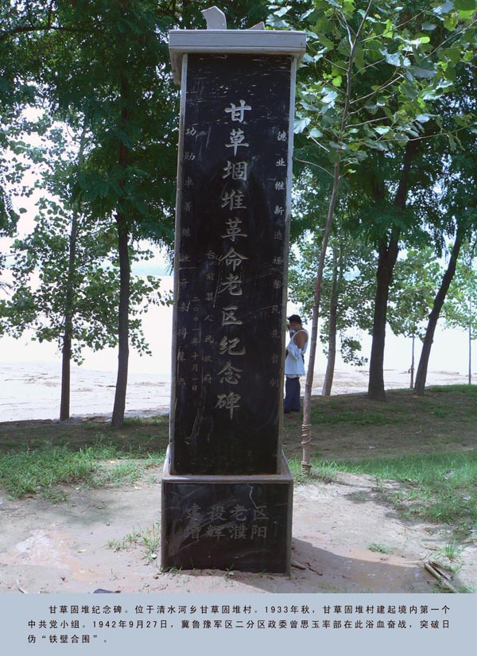
台前县甘草革命老区纪念碑
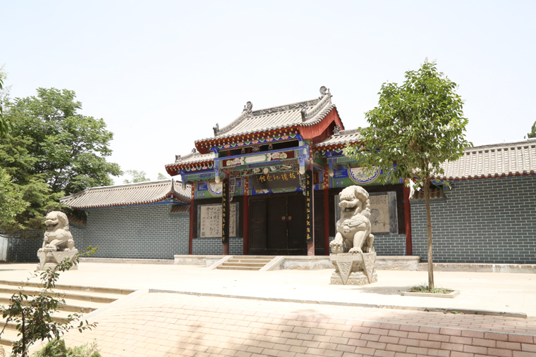
范县郑板桥纪念馆
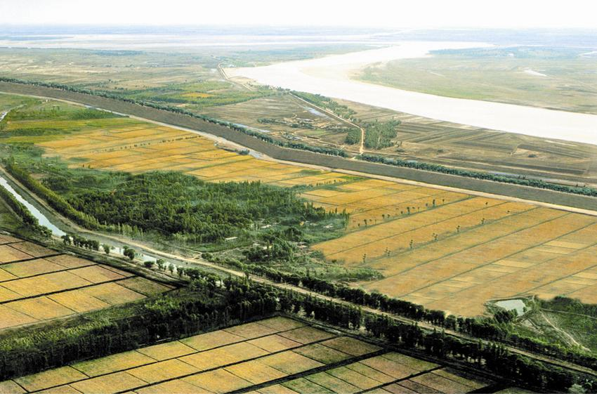
范县黄河风景
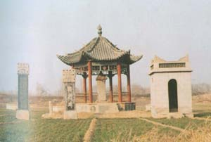
唐兀公碑
郑板桥纪念馆
濮阳清真寺
濮阳天主教堂
濮阳耶稣教堂
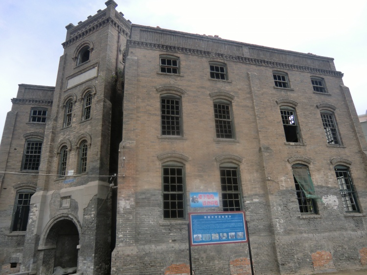
华美中学
瑕丘古迹
毛楼生态旅游区
张挥公园
刘邓大军渡河纪念碑
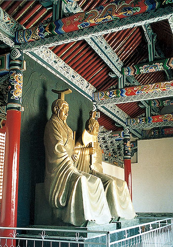
刘邓大军渡河纪念碑
刘邓大军渡河纪念碑
清丰亭
回銮碑
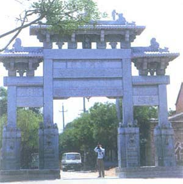
八都坊
 清丰县冀鲁豫军区纪念馆
清丰县冀鲁豫军区纪念馆
 东北庄野生动物园
东北庄野生动物园
 瑕丘古迹
瑕丘古迹